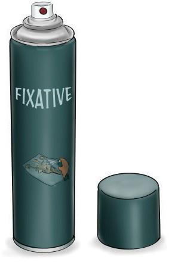

Figure 2.18: Fixative spray

Activity 2.3
- (a)Create a viewfinder from used boxes found around your school environment.
- (b)Use a viewfinder to draw through various images outside the classroom.
- (c)Use a piece of paper and a drawing board to draw an image of a bird.
- (d)Use a piece of paper, a drawing board, and an easel to draw any picture of your choice.
- (e)Use a Fixative spray to spray all pictures you have made in this activity.
Exercise 2.3
1.
Fixative spray is an equipment for spraying fixing materials on to a picture drawn using pencil, chalk, charcoal or similar dust-based